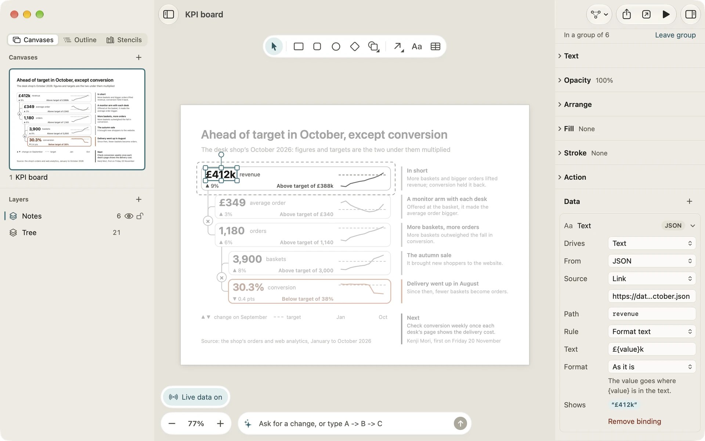
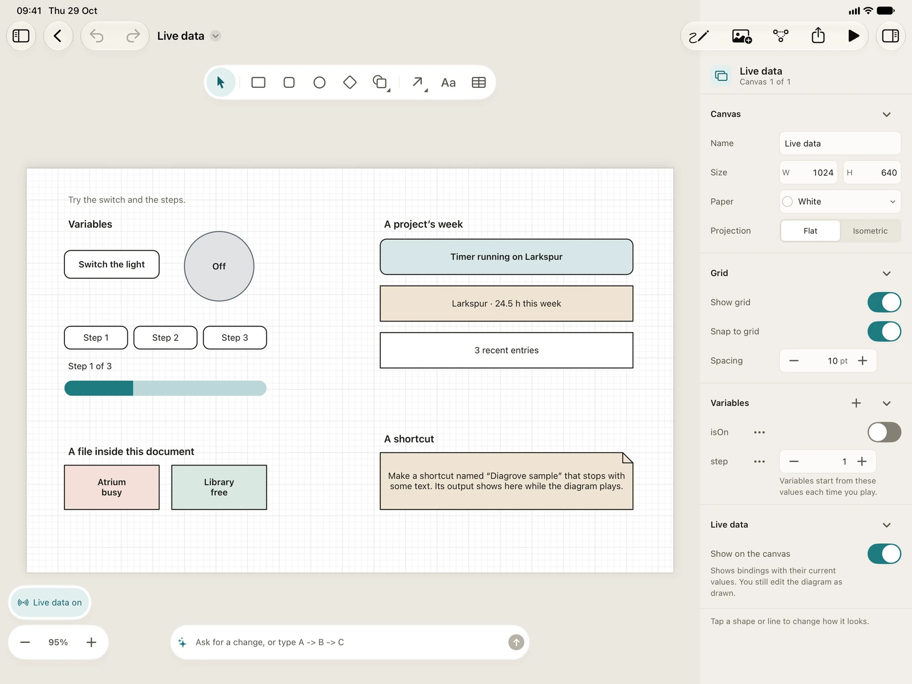

Bindings and live data
A binding lets a graphic show a value from outside the drawing: a number in its text, a colour that changes with a status, a progress bar that fills, or a graphic that appears only when something is true. This page covers what a binding is made of, where its values come from, and what you see while you edit and while you play.
What a binding is
A binding lives on one graphic and has three parts:
- What it drives: Text, Fill, Stroke, Text colour, Visibility or Progress. The menu offers what fits the graphic you selected; a line has a label and a stroke but no fill, for example. On a group, colours and progress pass to everything inside it.
- Where the value comes from: a variable, a JSON file, a web link, or a shortcut.
- A rule that turns the value into what the graphic shows.
A graphic can have several bindings; when two drive the same thing, the later one wins. Bindings never change the document you edit, only what’s shown: while you play, while Show live data is on, and in the Web player.
Add a binding
- Select one graphic and open the inspector’s Data section.
- Click + (or Add binding) and choose what the binding drives. A card opens.
- Fill in the card’s rows:
- Drives: what it changes.
- From: Variable, JSON or Shortcut. The rows under it ask for that source’s details.
- Path: which value to read, for JSON and a shortcut.
- Rule: As it is, Format text, Steps or Match values.
The card says what the binding shows right now, such as “Shows “12 h””, or why it leaves the graphic as drawn. Duplicate binding and Remove binding are in the card’s context menu, and an open card ends with a Remove binding row.

Paths
A path picks one value out of JSON. Leave it empty to use the whole value.
timer.runningreads a key inside a key.people[0].namereads the first item of a list;[-1]is the last.projects[name=Larkspur].hoursThisWeekfinds the item whosenameis Larkspur.recentEntries.countis the number of items in a list.
When a path leads nowhere, the card says where it went wrong, such as “No item in projects has name = Nope.”
Rules
- As it is: the value itself.
- Format text: words around the value, such as
{value} h this week. The Format menu writes it As it is, as a Whole number, with One decimal or as a Percentage. - Steps: a number picks an output by where it falls, such as red from 0, amber from 50 and green from 80. The last step it reaches wins.
- Match values: each value you list gives its own output, and Otherwise covers the rest.
What a value means depends on what it drives:
- Fill, Stroke and Text colour take a swatch name such as
tealorlight amber, or a hex code such as#2f62b8.nonemeans no fill, or no stroke. - Visibility hides the graphic when the value is false, 0 or empty, and shows it otherwise. A hidden graphic takes the lines connected to it along, and can’t be clicked in Play mode.
- Progress fills the shape from the left by a value from 0 to 1.
Where values come from
Variables
The document’s own variables, set up in the canvas inspector and changed by actions in Play mode. While you edit, a binding uses their starting values. See Play mode and actions.
JSON from a web link or a file
From JSON, the Source menu chooses where the JSON lives:
- Link: an address that starts with
https://, read every 30 seconds while you play or show live data, and when you click Load now. A read that fails or takes over 20 seconds keeps the last good value. - Use a file…: Diagrove keeps a copy of the JSON file inside the document (the menu then says In this document). It stays as it was when the original changes, and travels with the document. Choose another file… replaces it.
A shortcut’s output
From Shortcut, type the shortcut’s name and, if you like, a path into its output. Output that reads as JSON, such as {"done": 0.4}, is used as JSON; anything else as text. Shortcuts run when Play mode starts, when you refresh in Play mode, and when you click Run now on the card. A run that fails, is cancelled or gets no answer within two minutes keeps the last good output.
Show live data
While you edit, the canvas shows your drawing as drawn. To preview bindings, click Show live data in the canvas’s leading corner, above zoom. The canvas inspector’s Live data section has the same switch, Show on the canvas. The canvas then shows each bound graphic with its current value, using the variables’ starting values. Your edits still change the drawing underneath.
In Play mode the same corner says how the data stands, such as Live data or Some data couldn’t load, with a button to read it all again.

When data is missing
When there’s no value to show, a binding leaves the graphic exactly as you drew it: a link not read yet, a shortcut that hasn’t run, a path that leads nowhere, or a value that doesn’t fit, such as a word where a colour should be. The card says which, for example “There’s no value yet, so it stays as drawn.”
So draw each graphic the way it should look without data, such as a neutral colour or a dash for a number.
Privacy
A JSON link is the only kind of binding that uses the network. Diagrove reads it straight from your Mac or iPad, only from the https:// address you typed, and nothing goes to us. Opening a document never reaches the network by itself: links are read only while you play, while Show live data is on, or when you click Load now. Addresses that start with http: or file: aren’t read.
In an exported Web player, the browser of whoever opens the page reads the link, and the server has to allow it.